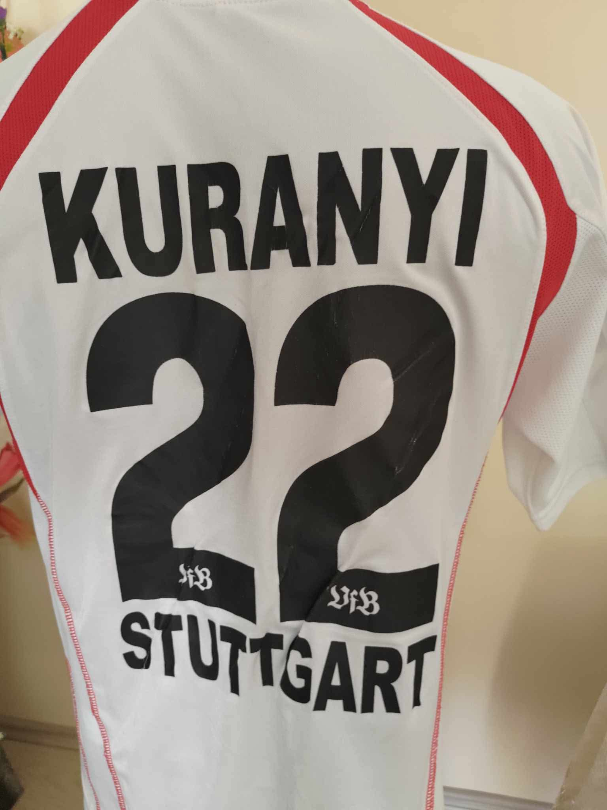
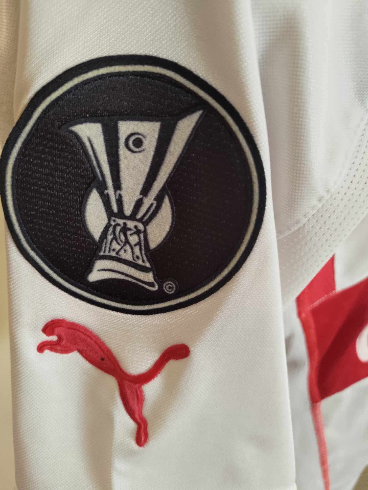

Exponatul #001 — VfB Stuttgart 2004/05


Kevin Kuranyi · #22
ClubVfB Stuttgart
Sezon2004/05
TipHome · colecție
JucătorKevin Kuranyi
Număr22
ProducătorPuma
Sponsordebitel
Primul exponat al muzeului: un tricou VfB Stuttgart din sezonul 2004/05, personalizat cu numele și numărul lui Kevin Kuranyi.
BundesligaVfB StuttgartColecție personală